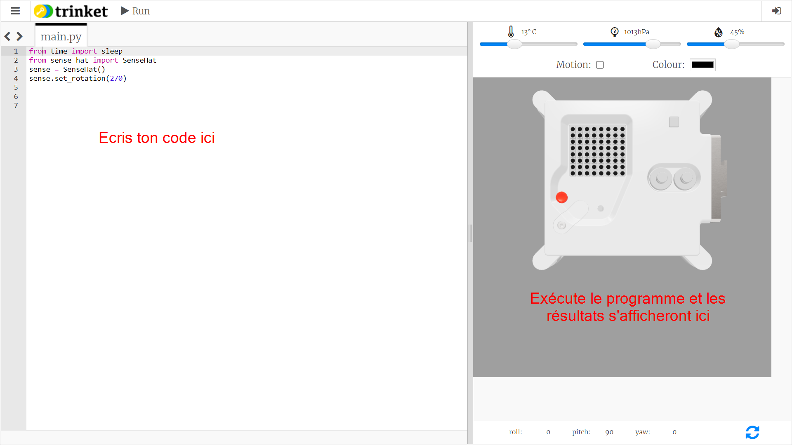

Qu'est-ce qu'un Astro Pi ?
Un Astro Pi est un ordinateur Raspberry Pi intégré dans un boîtier spécialement conçu pour les conditions spatiales. Il possède également une carte supplémentaire appelée Sense HAT, spécialement conçue pour la mission Astro Pi. Le Sense HAT est équipé d'un joystick, d'un écran LED et de capteurs permettant d'enregistrer les conditions d'éclairage, la température, l'humidité, la pression et l'orientation.
Voici une unité originale Mark I Astro Pi sur la Station spatiale internationale, exécutant un code écrit par des élèves. Votre code sera peut-être exécuté sur une nouvelle version des ordinateurs Astro Pi !
Pour cette mission, tu utiliseras l'émulateur Sense HAT. L'émulateur est un logiciel qui simule toutes les fonctions de l'Astro Pi dans ton navigateur Web.

Il existe quelques différences entre le Sense HAT réel et celui qui est émulé :
-
Sur l'émulateur, tu peux régler toi-même la couleur de la lumière, la température, la pression et l'humidité à l'aide de curseurs, alors que le véritable Sense HAT de l'Astro Pi utilise des capteurs pour mesurer ces paramètres dans son environnement.
-
Tu peux utiliser la souris pour cliquer et faire glisser le Sense HAT émulé afin de le déplacer et de le faire pivoter, simulant ainsi des changements d'orientation. Le véritable Astro Pi (et son Sense HAT) peut se déplacer dans le monde réel, et les capteurs d'orientation du Sense HAT détectent quand et comment il a bougé.